1008a46 TIMING SIDE POWER UNIT RIGID SUPPORT - R.R.
- Path
- Procedures > 10 ENGINE > 1008 POWER UNIT SUPPORTS > 1008A POWER UNIT FASTENINGS > 1008a46 TIMING SIDE POWER UNIT RIGID SUPPORT - R.R.
- Kind
- repair procedure (removal / refitting; the operation number is the code)
- Applies to
- engines: 1.2 8v, 1.6 16v, 1.3 JTD 16V, 1.9 JTD 8V, 1.9 DIESEL; all production periods
- Interactive page
- https://sloeber94.github.io/elrnDB-fDbl/en/#/223000117
Applies to: engines: 1.2 8v; all production periods
 Removing
Removing
 Refitting
RefittingOp. 7055B54 PROTECTION/GUARD UNDER ENGINE - R.R.
Op. 1008b10 POWER UNIT FRONT SUPPORT FLEXIBLE MOUNTING (TIMING SIDE) - REPLACE
1. Undo the fixing bolts (1a) and remove the rigid engine mount (1b).
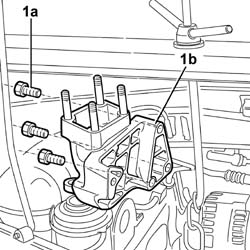
Applies to: engines: 1.2 8v; all production periods
Refitting
RemovingTighten the bolts fixing the rigid engine mount to the cylinder block/crankcase.
 | Fastening | Component | Ø | Value (daNm) |
|---|---|---|---|---|
- | Bolt | ENGINE MOUNT TIMING SIDE | M10 x 1.25 | (Engine) 6 |
| Fastening | Component | Ø | Value (daNm) |
|---|---|---|---|---|
- | Bolt | ENGINE MOUNT TIMING SIDE | M8 x 1.25 | (Engine) 2.2 |
Op. 1008b10 POWER UNIT FRONT SUPPORT FLEXIBLE MOUNTING (TIMING SIDE) - REPLACE
Applies to: engines: 1.6 16v; all production periods
Removing
RefittingPlace the car on the ramp.
Disconnect the battery negative terminal.
 | Name | Connector |
|---|---|---|
- | Battery |
Op. 1008b10 POWER UNIT FRONT SUPPORT FLEXIBLE MOUNTING (TIMING SIDE) - REPLACE
1. Undo the bolt (1a) and the bolt (1b) fixing the power assisted steering pipe (1c) to the support.
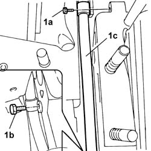
Applies to: engines: 1.6 16v; all production periods
1. Undo the fixing nut on the support.
Using the crossmember handwheel, raise the engine until the support fixing bolt is aligned with the window in the bodyshell, timing side.
2. Using the tool (2a), undo the bolts (2b) fixing the support to the head.
 | Name | Country |
|---|---|---|
2a | Hexagonal-headed bush | 1.870.874.000 |
3. Undo the bolt fixing the support to the timing cover.
4. Remove the support from the engine compartment.
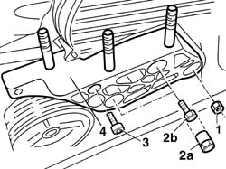
Applies to: engines: 1.6 16v; all production periods
Refitting
RemovingPosition the support in the engine compartment.
Tighten the bolts fixing the support to the cylinder head using the special tool.
| Name | Country |
|---|---|---|
- | Hexagonal-headed bush | 1.870.874.000 |
Tighten the nut fixing the timing belt fixed belt tensioner to the recommended torque.
| Fastening | Component | Ø | Value (daNm) |
|---|---|---|---|---|
- | Nut | ENGINE MOUNT TIMING SIDE | M12 x 1.25 | 5 |
Tighten the bolts fixing the power assisted steering pipe to the support.
Op. 1008b10 POWER UNIT FRONT SUPPORT FLEXIBLE MOUNTING (TIMING SIDE) - REPLACE
Connect the battery negative terminal.
| Name | Connector |
|---|---|---|
- | Battery |
Remove the car from the ramps.
Applies to: engines: 1.3 JTD 16V; all production periods
Removing
RefittingPlace the car on the ramp.
Disconnect the battery negative terminal.
| Name | Connector |
|---|---|---|
- | Battery |
1. Disconnect the electrical connection from the air flow meter.
| Name | Connector |
|---|---|---|
1 | Air flow meter |
2. Loosen the band and disconnect the the turbocharger air inlet sleeve from the rigid pipe, air flow meter side.
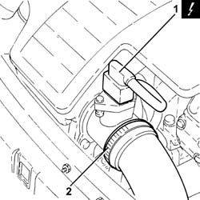
Applies to: engines: 1.3 JTD 16V; all production periods
1. Loosen the band (1a) and disconnect the hose (1b) from the air intake.
2. Remove the air filter (2a) complete with air flow meter (2b) by releasing from the underlying pins and then from the rear fastenings.
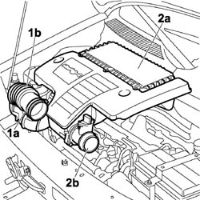
Applies to: engines: 1.3 JTD 16V; all production periods
Carry out
Op. 7055B54 PROTECTION/GUARD UNDER ENGINE - R.R.
Position a suitable container for collecting the power assisted steering fluid under the rapid connector.
1. Disconnect the rapid connector for the return pipe from the power assisted steering circuit heat exchanger pipe.
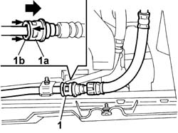
Applies to: engines: 1.3 JTD 16V; all production periods
Carry out
Op. 4130B10 POWER STEERING FLUID RESEVOIR - R.R.
Carry out
Op. 1044B10 FUEL FILTER ASSEMBLY - R + R OR REPLACE
Position a hydraulic jack under the engine by the timing side support and carefully lift the power unit to discharge the weight from the flexible mounting.
Carry out
Op. 1008b10 POWER UNIT FRONT SUPPORT FLEXIBLE MOUNTING (TIMING SIDE) - REPLACE
Carry out
Op. 1092C10 POWER STEERING AND/OR SELF-LEVELLING SUSPENSION PUMP DRIVE BELT - R + R
Carry out
Op. 1092C14 POWER STEERING PUMP/SELF LEVELLING SUSPENSION PUMP PULLEY - R + R WITH BELT REMOVED
Carry out
Op. 4130B20 POWER STEERING PUMP - R.R.
1. Release the securing clip (1a) and move the wiring (1b) aside.
2. Undo the fixing bolt (1a) and remove the mounting bracket (1b).
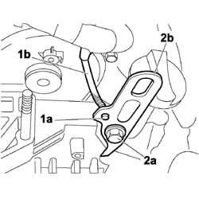
Applies to: engines: 1.3 JTD 16V; all production periods
1. Undo the three remaining fixing bolts (1a) and remove the timing side power unit rigid support (1b) from the vehicle.
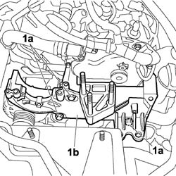
Applies to: engines: 1.3 JTD 16V; all production periods
Refitting
Removing1. Position the timing side power unit rigid support, complete with mounting bracket (1a), in its housing on the engine and tighten the four fixing bolts (1b) to the recommeded torque.
| Fastening | Component | Ø | Value (daNm) |
|---|---|---|---|---|
1b | Bolt | ENGINE MOUNT TIMING SIDE | M10 | (engine crankcase side) 5.7 ¸ 6.3 |
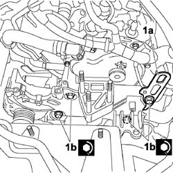
Applies to: engines: 1.3 JTD 16V; all production periods
Secure the wiring to the engine mounting bracket.
Carry out
Op. 4130B20 POWER STEERING PUMP - R.R.
Carry out
Op. 1092C14 POWER STEERING PUMP/SELF LEVELLING SUSPENSION PUMP PULLEY - R + R WITH BELT REMOVED
Carry out
Op. 1092C10 POWER STEERING AND/OR SELF-LEVELLING SUSPENSION PUMP DRIVE BELT - R + R
Carry out
Op. 1008b10 POWER UNIT FRONT SUPPORT FLEXIBLE MOUNTING (TIMING SIDE) - REPLACE
Remove the hydraulic jack from beneath the engine
Connect the rapid connector for the return pipe to the power assisted steering circuit heat exchanger pipe.
Carry out
Op. 1044B10 FUEL FILTER ASSEMBLY - R + R OR REPLACE
Carry out
Op. 4130B10 POWER STEERING FLUID RESEVOIR - R.R.
Refill the power assisted steering circuit using the recommended fluid.
Carry out
Carry out
Op. 7055B54 PROTECTION/GUARD UNDER ENGINE - R.R.
Position the air filter complete with air flow meter, attaching it to the rear fastening and then to the pins underneath.
Connect the hose to the air intake on the crossmember and tighten the securing band.
Connect the air intake sleeve to the turbocharger, air flow meter side, and tighten the band.
Connect the electrical connection to the air flow meter.
| Name | Connector |
|---|---|---|
- | Air flow meter |
Connect the battery negative terminal.
| Name | Connector |
|---|---|---|
- | Battery |
Remove the car from the ramps.
Applies to: engines: 1.9 DIESEL; all production periods
Removing
RefittingPlace the car on a ramp.
Op. 7055B54 PROTECTION/GUARD UNDER ENGINE - R.R.
1. Disconnect the flexible recirculation pipe from the rigid section.
2. Unscrew the retaining bolts
3. Move the engine coolant reservoir to the side.
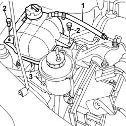
Applies to: engines: 1.9 DIESEL; all production periods
1. Undo the bolts fixing the power assisted steering pump fluid reservoir mounting.
2. Move the assembly aside.
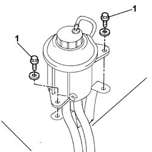
Applies to: engines: 1.9 DIESEL; all production periods
Place an arm lift beneath the engine to support it while removing the mount.
1. Undo the nuts fixing the support to the bodyshell.
2. Undo the nuts fixing the support to the engine.
3. Remove the timing side rigid support.
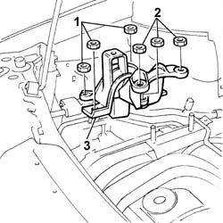
Applies to: engines: 1.9 DIESEL; all production periods
Refitting
RemovingFit the timing side rigid support, fitting it on the studs on the engine and the bodyshell.
Tighten the bolts fixing the rigid engine mount to the cylinder block/crankcase.
| Fastening | Component | Ø | Value (daNm) |
|---|---|---|---|---|
- | Nut | ENGINE MOUNT TIMING SIDE | M10 x 1.25 | (Bodyshell side) 4.3 |
| Fastening | Component | Ø | Value (daNm) |
|---|---|---|---|---|
- | Nut | ENGINE MOUNT TIMING SIDE | M10 x 1.25 | (Engine side) 5 |
Remove the arm lift under the engine positioned to support it whilst removing the support.
Fit the engine coolant reservoir.
Tighten the retaining bolts.
Connect the flexible recirculation pipe to the section of rigid pipe and secure it using a new band.
Fit the power assisted steering fluid pump reservoir complete with mounting bracket.
Tighten the bolts retaining the brackets to the body.
Op. 7055B54 PROTECTION/GUARD UNDER ENGINE - R.R.
Remove the vehicle from the ramp.
Applies to: engines: 1.9 JTD 8V; all production periods
Removing
Refitting1. Undo the bolts (1a) and move the power assisted steering fluid reservoir (1b) aside.
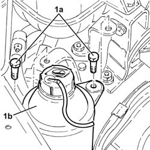
Applies to: engines: 1.9 JTD 8V; all production periods
1. Undo the bolts (1a) and remove the power steering fluid reservoir mounting bracket (1b).
2. Loosen the band and disconnect the coolant return pipe from the engine coolan reservoir.
Drain the engine coolant reservoir using a suitable syringe.
3. Undo bolts securing the engine cooling reservoir.
4. Loosen the band and disconnect the supply pipe from the engine coolant reservoir.
5. Remove the engine coolant reservoir.
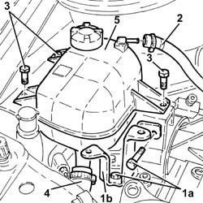
Applies to: engines: 1.9 JTD 8V; all production periods
1. Undo the nuts (1a) and the bolts (1b) and remove the plate (1c) connecting the timing side rigid engine support to the air chamber.
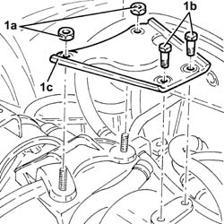
Applies to: engines: 1.9 JTD 8V; all production periods
1. Loosen the nut fixing the timing side rigid engine support to the pressure pump mounting.
2. Loosen the nuts fixing the timing side power unit flexible mounting to the bodyshell.
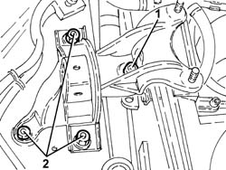
Applies to: engines: 1.9 JTD 8V; all production periods
Position a hydraulic lift under the power unit.
1. Completely undo the nuts (1a) loosened previously and remove the timing side rigid engine support (1b) complete with flexible mounting.
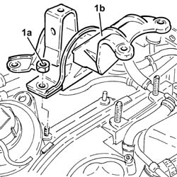
Applies to: engines: 1.9 JTD 8V; all production periods
1. Working at the bench, undo the bolt (1a) and separate the timing side rigid engine support (1b) from the flexible mounting (1c).
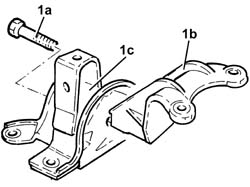
Applies to: engines: 1.9 JTD 8V; all production periods
Refitting
Removing1. Assemble the timing side rigid engine support (1a) to the flexible mounting (1b) and tighten the bolt (1c) to the recommended torque.
| Fastening | Component | Ø | Value (daNm) |
|---|---|---|---|---|
1c | - | - | - | - |
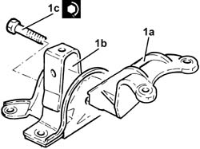
Applies to: engines: 1.9 JTD 8V; all production periods
Place the timing side rigid engine support assembly back in its housing and secure it withtout tightening the nuts.
Remove the hydraulic lift from underneath the power unit.
1. Tighten the nut fixing the timing side rigid engine support to the pressure pump mounting.
| Fastening | Component | Ø | Value (daNm) |
|---|---|---|---|---|
1 | Nut | ENGINE MOUNT TIMING SIDE | M10 | (Pressure pump support side) 4.5 ÷ 5.5 |
2. Tighten the nuts fixing the power unit timing side flexible mounting to the bodyshell.
| Fastening | Component | Ø | Value (daNm) |
|---|---|---|---|---|
2 | Nut | ENGINE MOUNT TIMING SIDE | M10 | (Bodyshell side) 4.0 ÷ 5.0 |
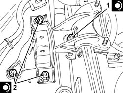
Applies to: engines: 1.9 JTD 8V; all production periods
Place the plate connecting the timing side rigid engine support to the air chamber back in its housing and tighten the nuts and bolts.
Place the engine coolant reservoir back in its housing.
Connect the supply pipe to the engine coolant reservoir and tighten the band.
Tighten the engine coolant reservoir fixing bolts.
Connect the coolant return pipe to the engine coolant reservoir and tighten the band.
Place the power assisted steering fluid reservoir mounting bracket back in its housing and tighten the bolts.
Refit in its seating the power steering fluid reservoir and secure it with its bolts.
Refill the engine cooling system with coolant
Topics linked from this page (10)
- 0010T20 coolant change
- 1008b10 power unit front mount (timing side) flexible block - replace
- 1044B10 fuel filter assembly - r + r or replace
- 1092C10 power steering and/or self-levelling suspension pump drive belt - r + r
- 1092C14 power steering pump/self levelling suspension pump pulley - r + r with belt removed
- 4130B10 power steering fluid resevoir r r
- 4130B20 power steering pump r r
- 7055B54 under-engine guard - r r
- A001 BATTERY
- K041 AIR FLOW METER